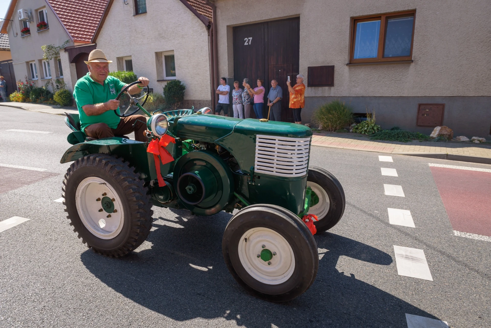

Uchvacující sbírka historické zemědělské techniky. Pečlivě restaurované stroje, které vyprávějí příběh české zemědělské tradice.
Firma Fimas s.r.o. z Nového Veselí se specializuje na zemědělské díly a opravu techniky. Vedle hlavní činnosti se s láskou věnujeme sběru a restaurování historických zemědělských strojů.
Naše sbírka zahrnuje unikátní kusy od koňmi tažených strojů po parní lokomobily. Pravidelně se zúčastňujeme výstav historické techniky v regionu Vysočiny i jinde po České republice.


Josef Ficek, zakladatel firmy Fimas, se dlouhá léta věnuje nejen podnikání, ale také historické technice. Jeho vášeň pro techniku a historie se odráží v jeho práci, kterou pravidelně prezentuje na různých výstavách a akcích.
Každý rok přináší nové výsledky svého úsilí, které zachycují fascinující příběhy a inovace z minulosti. Díky svému odbornému zázemí a neustálému vzdělávání se pan Ficek stal uznávanou osobností v oblasti historické techniky.
Přijďte se podívat na jeho jedinečné výstavy a objevte kouzlo techniky, které spojuje minulost s přítomností.
Každý stroj v naší sbírce má svůj jedinečný příběh. Pečlivě je restaurujeme a představujeme veřejnosti na regionálních výstavách.
Detailní pohledy na naše historické stroje a účast na výstavách.
Pravidelně se zúčastňujeme regionálních i národních výstav historické zemědělské techniky.
Máte zájem o historické stroje nebo chcete pozvat naši sbírku na výstavu? Neváhejte nás kontaktovat.